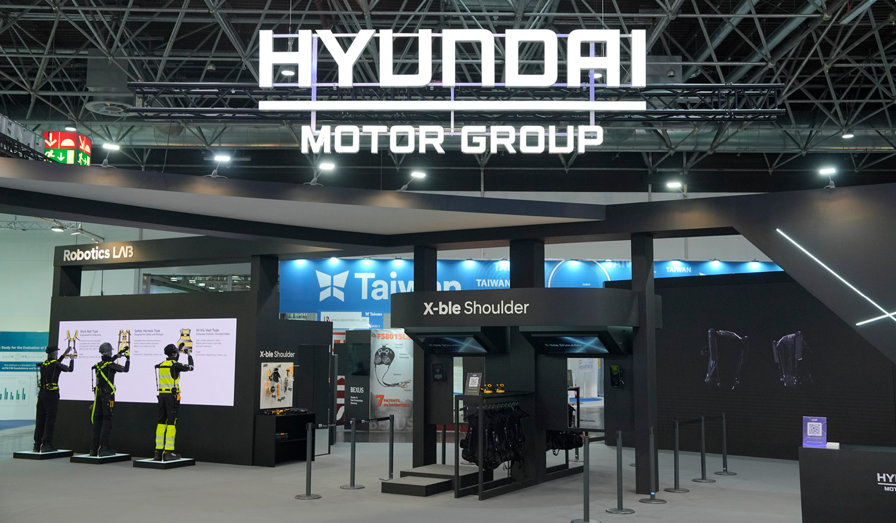
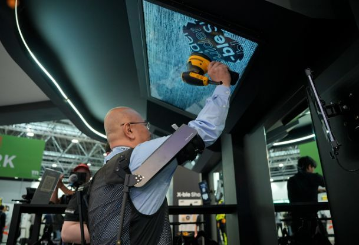
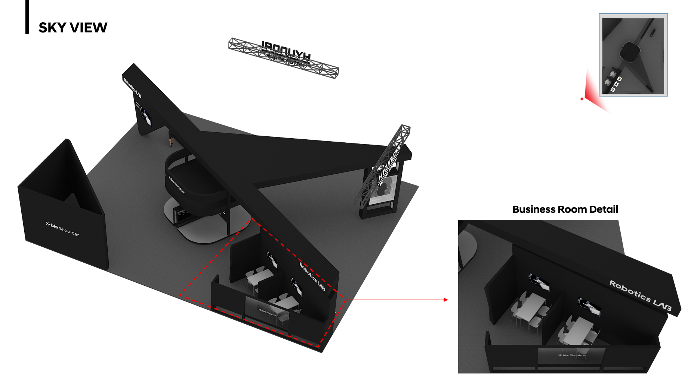
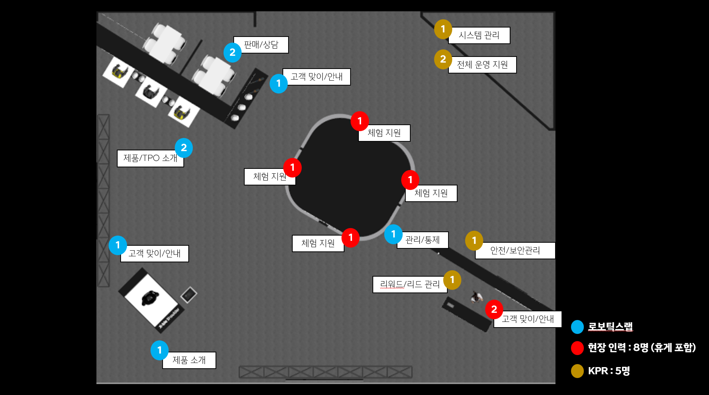

2026 해외 판매를 앞두고 제품 이해를 넘어 도입 판단과 조직 내 검토까지 이어질 정보·체험·상담 기반이 필요했습니다.
글로벌 B2B 전시 · 전시 경험과 리드 구조
첫 글로벌 독립 부스에서 제품 인지부터 구매 상담까지 이어지는 B2B 여정을 설계했습니다.
기간2025.08 – 2025.11
위치독일 뒤셀도르프 국제 전시장
담당전시 경험·디지털 시스템 기획 · 프로젝트 PM · 해외 현장 실행
팀 구성기획 2 (기여도 80%) · 디자인 1 · 영상 1 · 공간 2 · 개발 1
웨어러블 로봇은 직접 착용해야 가치를 이해할 수 있어 피팅 경험을 먼저 배치했습니다. 체험 뒤에는 Hub에서 제품 정보를 확인하고 상담을 신청하도록 구성했습니다.

핵심 과제
해외 판매를 앞두고 바이어가 제품을 인지하고 체험·학습을 거쳐 구매를 고려할 수 있어야 했습니다.
웨어러블 로봇은 제품을 보는 것만으로 도입 여부를 판단하기 어렵습니다. 첫 글로벌 독립 부스에서 바이어가 제품의 차별점과 적용 가능성을 검토하려면 네 단계가 끊기지 않고 이어져야 했습니다.
부스에 들어온 바이어가 X-ble Shoulder의 브랜드와 제품 특성을 빠르게 파악할 수 있어야 했습니다.
카탈로그 정보만으로 판단하기 어려운 웨어러블 로봇의 보조력을 직접 경험할 수 있어야 했습니다.
제품 설명 영상과 상세 정보로 여러 제품의 차이와 적용 범위를 짧은 시간 안에 파악할 수 있어야 했습니다.
체험 후에도 상담을 신청하고 조직 내 검토에 필요한 정보를 이어서 확인할 수 있어야 했습니다.
내 역할·판단
바이어가 도입 검토에 필요한 정보를 남기고 후속 상담으로 이어지도록 X-ble Hub와 리드 수집 구조를 설계했습니다.
로보틱스랩
제품 소개 방향과 전시 목적 및 현장 운영 요구사항 협의
한국에서 완성한 도면을 현지 시공에 적용하고 운영 인력을 직접 섭외·교육해 오픈을 준비
- 전시 경험 설계제품 탐색·착용 체험·상담 신청으로 이어지는 방문자 흐름 설계
- 디지털 시스템 기획X-PASS 기반 인증·태블릿 포토존·상담 신청 관리 화면 기획
- 현장 운영 조율공간 설치와 운영 인력을 직접 구인·관리하며 현장 일정 조율
- 물류·통관 관리행사 물류업체를 직접 섭외하고 국제 운송과 현지 통관 일정을 조율
실행과 근거
실행과 상세
전시 경험과 현장 운영을 실제 화면과 실행 문서로 구체화했습니다.
01 · 현장 운영 화면
바이어의 도입 검토와 현장 운영에 직접 연결되는 화면만 선별했습니다.

경험 01 · 피팅 체험
터치스크린으로 확인하는 엑스블 숄더 착용 체험
웨어러블 로봇은 설명만으로 착용감과 작업 지원 방식을 전달하기 어려워, 방문자가 직접 착용한 뒤 대형 터치스크린으로 실제 작업 동작을 시연하며 보조력을 체감하도록 피팅 존을 구성했습니다.

경험 02 · X-ble Hub
체험 전 필수 체크인과 제품 정보 탐색을 맡은 모바일 Hub
방문자는 X-ble Hub에서 체크인한 뒤 전시 정보와 제품 정보를 확인하고 체험과 상담 신청으로 이어갈 수 있었습니다.

경험 03 · 상담 신청
상담 요청과 진행 현황을 관리하는 운영자용 웹페이지
현장에서 수집된 상담 정보를 운영자가 확인하고 후속 응대로 연결할 수 있도록, 문의 내용과 진행 상태를 관리하는 화면을 기획했습니다.
02 · 현장 실행 산출물
공간 설계안과 현지 운영·물류 계획을 주간 보고 자료로 관리했습니다.

부스 공간과 비즈니스 상담실의 디자인 진행안, 수정·의사결정 사항을 관리한 주간 보고 자료

체험 지원, 제품 안내, 상담, 시스템 관리 등 구역별 역할과 투입 인원을 정리한 운영 계획

패킹리스트를 정리하고 설치와 철수 물품의 운송 방식을 나눠 조율한 통관 실행 문서
결과·영향
4일간 X-ble Hub 체크인 706명과 구매 문의 예약 23건을 만들었습니다.
X-ble Hub 체크인 706명
4일간 모바일 체크인에 참여한 방문자 기준입니다.
포토존 참여 356명
제품 체험 뒤 X-PASS 인증번호로 사진을 남기는 디지털 접점이 이어졌습니다.
구매 문의 예약 23건
제품 관심을 보인 B2B 방문자와의 초기 영업 접점을 만들었습니다.
부스 만족도 긍정 응답 96%
설문 23건 중 5점 또는 4점 응답이 22건이었고 다음 부스 방문 의향은 87%였습니다.